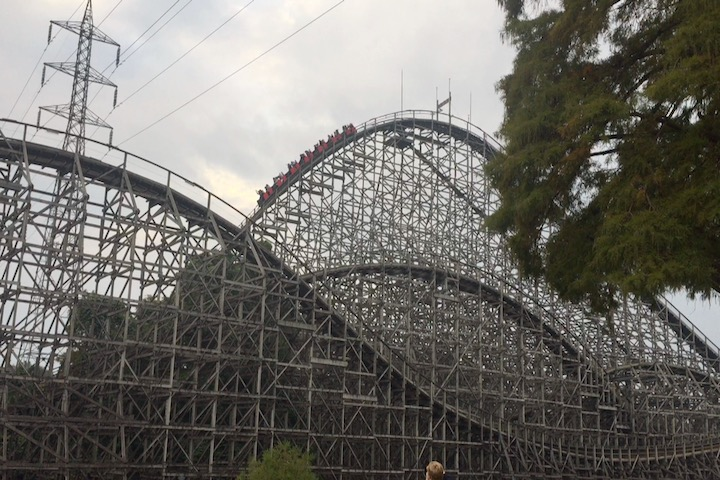
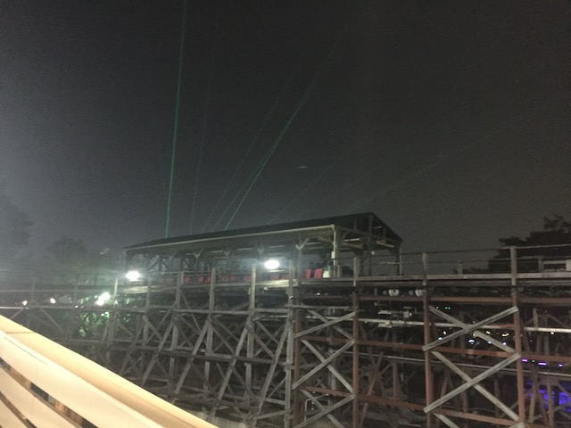
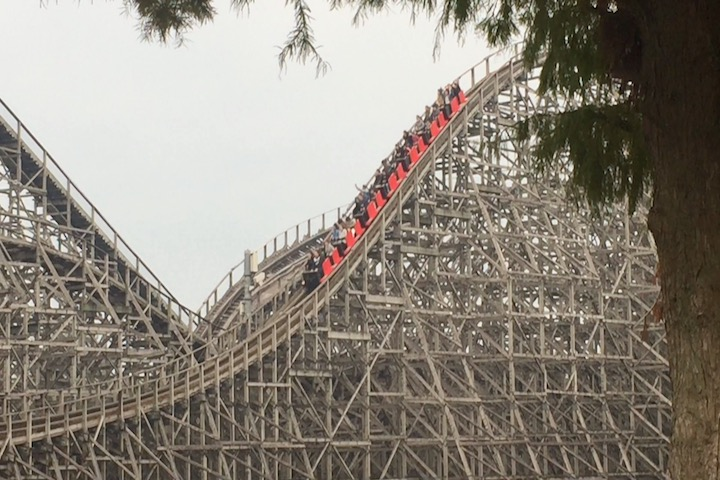
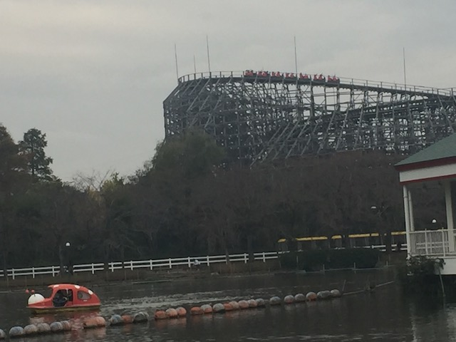
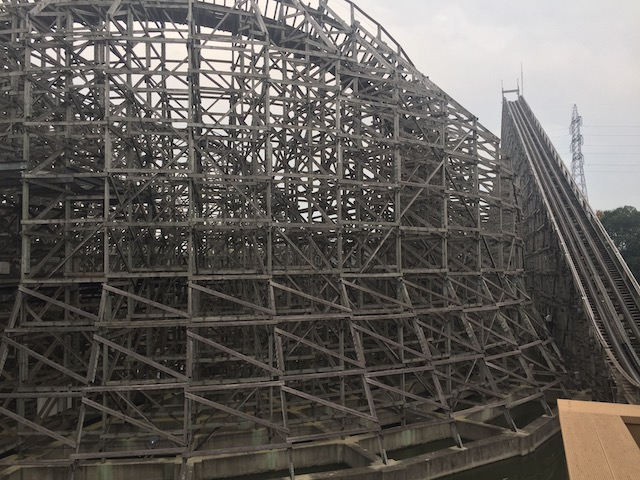
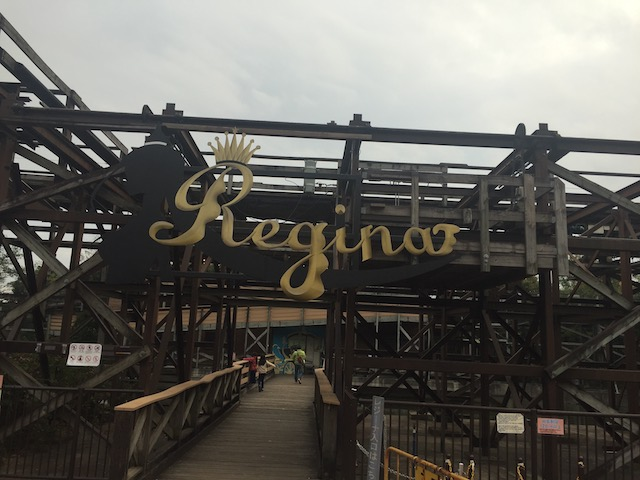
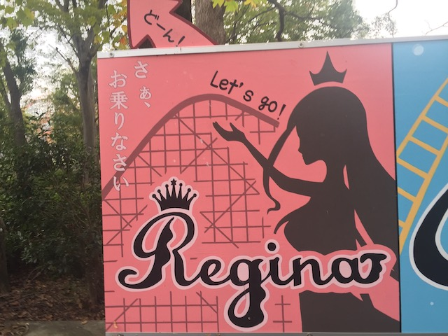
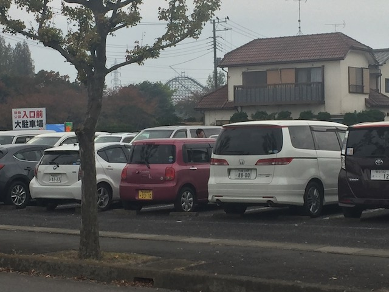

| |

Regina Review

For today's review, we'll be going back in time to my visit to Tobu Zoo to review Regina. The parks wooden coaster that...I'm sad that they got rid of this ride since...it was pretty good. Not the best ride ever, and I know that people generally overlooked this ride because Kawasemi is in the park. But...this was still pretty good. I mean, its an Intamin Wooden Coaster. Yeah. It wasn't one of their famous Plug'N'Plays that are SO F*CKING GOOD!!! But it was still a very fun wooden coaster. So yeah. Let's get riding. We hopped in the cars, pulled down the T-Lap Bar, and away we went! We went down a dip, and then began climbing up the lifthill. Looking to the left, we got a good view of the wooden mess we're about to go through. Other than that, just some trees and the pond that we were over. Eventually, we reached the top of the lifthill, and then we dropped. It was a decent sized drop. Bigger than the majority of wooden coasters, though wooden coasters definately can be bigger. And hey, we got a decent amount of speed. We then rose up a decent sized hill, before going thrugh a turnaround. We lost a decent amount of speed, but this big turnaround, and we're pretty high off the ground. Also, there's not a whole lot of laterals here either. We went through what looked like straight track, but was actually a really gradual drop before it got steeper and just dropped to the rest of the ground. This gave us back some speed as well as a nice pop of airtime. We then went through a decent sized airtime hill, and...yeah. We got some airtime. Nothing super strong or anything, but still fun. Also, you got some cool headchoppers here. We then rise up and head up into another turnaround. Now this was one downside of the ride. It wasn't exactly a smooth ride. It had some roughness. But it wasn't anything too major. Some shuffling, but nothing too rough. Also, no laterals here. We rolled through some straight track and dipped back down to the ground, or water since the ride was right on the water. And hey. Another mild pop of airtime. Also, there was a little bit of jackhammering at the bottom of these drops. But again, it was very mild and no big deal. We went around a slight curve, before we rose up through another hill. Sadly, there was no airtime here. We then rose up another slightly curved hill, and went through some trims. Aww. Lame. =( We then go through a giant downward helix. It's not banked, and it sort of just feels like straight track, but we gradually are gaining speed. Plus, you get a lot of cool headchoppers halfway through. Yeah, there's a lot of those on this ride. Rise up a small hill, go through some straight track, get out from underneath the rides structure, and now we dropped down a smaller drop. But hey. We got some airtime along the way. YAY!!! We rose up a small hill, went around some slight turn, there weren't a ton of laterals, but it was still fun. We went up a small double up, but...sadly, there was no airtime. We dipped down, rose up a little bit, and glided right into the brake run. So yeah. Regina was actually a really fun ride. Sure, it wasn't the best ride ever. There's better wooden coasters out there, it was a little rough around the edges, and Kawasemi steals the show at Tobu Zoo. But it was still a lot of fun. And...it was something rare. You see, there are almost no wooden coasters in Japan. There were only 3 wooden coasters in Japan. And now that they tore down Regina, there are now only 2 woodies in Japan left. Jupiter @ Kijima, and Elf @ Hikarta. That's kind of sad. Also, Tobu Zoo needs more rides. If you asked me earlier about if they should RMC Regina, I would've said "Hell no! It's a really fun wooden coaster and it should be preserved!". However, now that it's already officially gone, all I can say is "Tobu Zoo, PLEASE be in contact with RMC to make Regina into a new kickass roller coaster"! This park badly needs another standout attraction, and an RMC at Tobu Zoo would really cement its status as one of the must-hit parks of Japan. Regardless, Regina, you will be missed.
7/10
Location: Tobu Zoo
Opened: 2000
Died: August 9, 2019
Built by: Intamin
Last Ridden: November 4, 2018
Regina Photos







Home
|